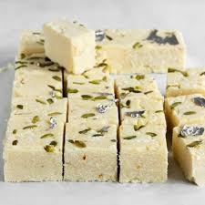

|

|
સામગ્રી:
- 1 કપ ખાવાનું માવો (માવા/ખોયા)
- ½ કપ પીસી ખાંડ
- ¼ ચમચી એલચી પાઉડર
- 1 ટેબલ સ્પૂન ઘી
- સૂકા મેવો (છાંટવા માટે)
બનાવવાની રીત:
- એક પેનમાં ઘી ગરમ કરી તેમાં ખોયો ભૂનો.
- સોનેરી થાય ત્યાં સુધી ભૂન્યા પછી તેમાં ખાંડ અને એલચી પાઉડર ઉમેરો.
- સારું મિક્સ થવાથી એક સપાટ તળિયા વાળી થાળી માં ઘી લગાવી તેને પાથરો.
- મૂછરીથી સપાટ કરો અને ઉપર મેવો છાંટો.
- ઠંડુ થાય પછી ચોરસ આકારમાં કાપો.
વિડીયો જુઓ:
બર્ફી બનાવવાની વિડીયો
|